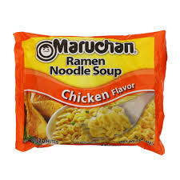

Ramen

Descriprion
One of my favorite things to eat, could be lunch, late dinner, or even a midnight snack. So easy and simple to make, full of flavor and spices, tastes so good.
Water
microwave
bowl
Steps
- Fill bowl of ramen with water up to right above the pieces of noodles
- Pour the spice or flavor packet in to the bowl of ramen
- put into the microwave for 3 minutes
- Once done cooking, take out and let it cool for a bit, then enjoy :)
Tuna mayo sandwhich
Description
Showed to me first my my mom, i make this now many times. It tastes great with 30+ grams of protien with a good amount of calories. I love making these and definitley dosent take too much time to make
Bread
Tuna
Mayo
- Toast bread between light and medium
- Strain Tuna
- Mix tuna and mayo and spread it on the bread after toasted
Egg sandwhich

Description
Also showed to me by my parents, when i first ate it, i loved it. Since then i have been shown how to make it and now i use as a lunch or a late dinner, filled with protien and calories, it tastes great.
Toasted bread
2-3 eggs
pan and spatula
- spray the pan over the stove with PAM or sometime of substance to have non stickyness
- Toast the bread between light and meduim
- cook the eggs slowly at a medium heat so it can stay together as 1-2 pieces
- Slide the egg to the toast and close, cut and eat